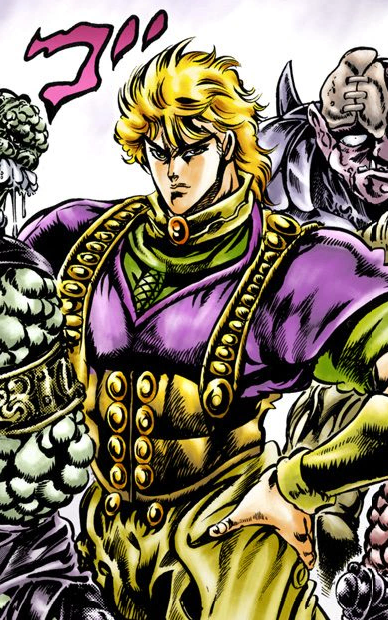
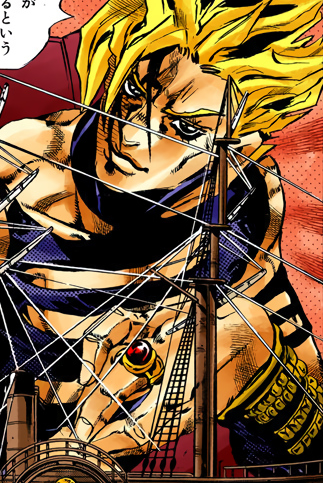
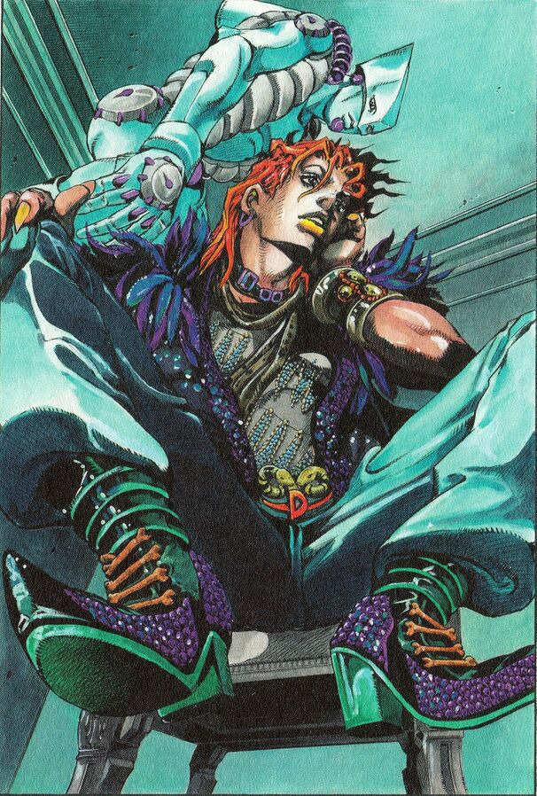
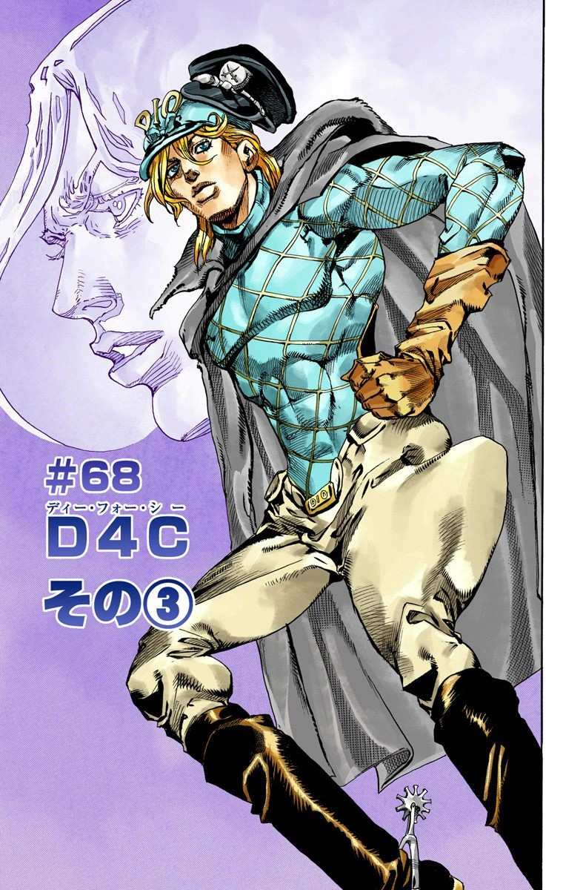
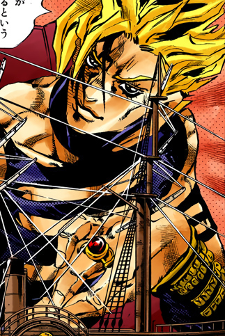
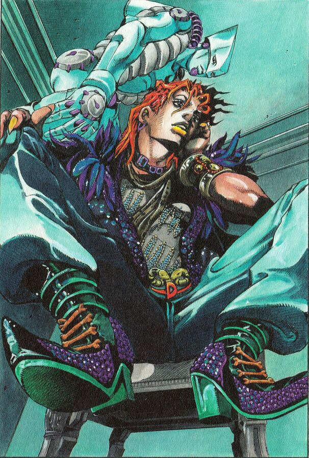
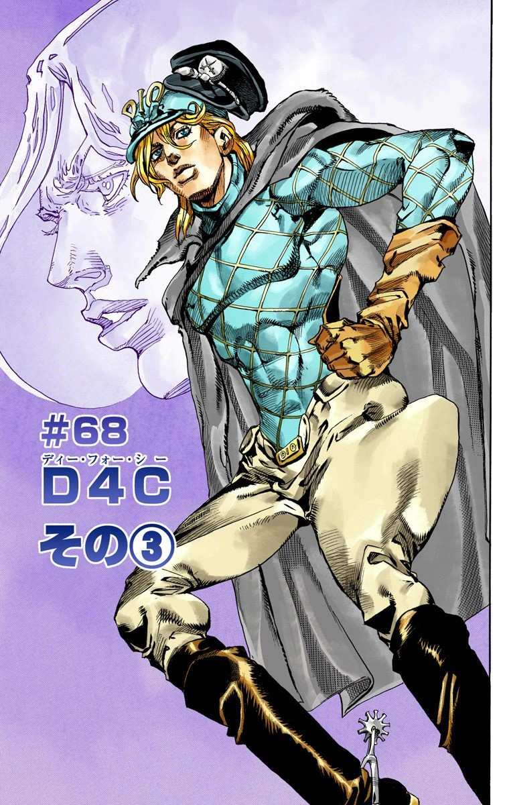

Darling Destiny CEO's Top 3 Waifus!!!
by a girl author who travelled to the year 2230 of some alternate universe and interviewed the mysterious CEO of Darling Destiny
This is typed at March 17, 2021 of this universe back when she was having a training in Village88.
| Waifus | One Shots/Series They Came From |
|---|---|
| Dio/Diego Brando | JoJo's Bizarre Adventure |
| Dante | Devil May Cry |
| Samus Aran | Metroid |
Here are some tidbits about Darling Destiny for those who do not know or just wanted to read about it:
Darling Destiny is a company founded in 2025 with the goal of making AI with the best, most realistic and latest AI Technology, Data Science, Visual Reality, Cybersecurity, Web Technology, Robotics, Computer Science, Information Technology, Computer Engineering and more that could make the customer's best experiences with their own considered best waifu (Japanese anime, manga and video game fans' pronunciation of wife) possible. They create waifus belonging to any gender, or no gender. They can be either a realistic hologram or a human-like android. It hires the best quality employees from various backgrounds and educational level. The first waifu they made is also named Darling Destiny just like their company. Due to the increasing many pandemics, crimes, fear and mistrust of fellow humans, loneliness, anxiety, depression, and the increasing isolation, their waifu sales have increased more than ever after 200 years. Darling Destiny also donated waifus to people who needed and wanted them but cannot afford to buy them. The waifus have evolved to the point that they also belong in the workforce and even replaced some human workers. The crime rates have dropped dramatically partially due to the almost supernatural durability and repair of these waifus who not only can provide love, pleasure and companionship but also can provide protection, punishment, and other services. The waifu's "free will" can be edited and customized but the customer cannot use it for the purpose of hacking servers, computers, and smartphones due to very high, hard to understand, and complex security. The name Darling Destiny is based on the lyrics of English cover of "Kiss of Death" by LeeandLie. It is originally in Japanese and sung by Mika Nakashima and composed by Hyde.
Below are the mystery CEO's top 3 waifu list.
To skip to the survey form below, click here.Dio/Diego Brando from JoJo's Bizarre Adventure
 





Wikipedia: Dio Brando (Japanese: ディオ・ブランドー, Hepburn: Dio Burandō) is a fictional character appearing in JoJo's Bizarre Adventure, a Japanese manga series written and illustrated by Hirohiko Araki. He is the main antagonist of the series' first part, Phantom Blood, appearing in the debut chapter "Dio the Invader" (侵略者ディオ, Shinryakusha Dio), published in Weekly Shōnen Jump in 1987. He later returns (known simply as DIO) as the main antagonist of the series' third part, Stardust Crusaders - now a powerful vampire and user of the time-stopping supernatural ability named The World. The poor son of an abusive alcoholic who worked Dio's mother to death, Dio holds an inordinate amount of enmity toward others. As the series' most prolific villain, his defining trait is his staunch ambition, which manifests in a peerless desire for power, no matter the cost. In the alternate universe of the series' seventh part, Steel Ball Run, a character named Diego Brando (ディエゴ・ブランドー, Diego Burandō) bears resemblance to Dio and appears as a minor antagonist. -
Some of Dio and Diego Brando's Appearances:
- Part 1: Phantom Blood
- Part 3: Stardust Crusaders
- Part 6: Stone Ocean
- Over Heaven
- Part 7: Steel Ball Run
- Jorge Joestar
More about Dio Brando here and Diego Brando here.
Darling Destiny CEO: I've always found Dio to be a very interesting and funny person although I really really hate him at first to the point that I want to just keep on punching and kicking him until he die. Later on, after I read the part 6 and 7 manga and Over Heaven novel parts from JoJo's Bizarre Adventure, I instantly fell in love and became infatuated with him so much that I want to do him instantly as soon as I see him. While he's evil, he can be quite nice, sophisticated, and sexy to his most trusted best friend Father Enrico Pucci the priest. He speaks, dresses, and acts seductively like a woman. I resonate with his desire to go to heaven. Until today, I still do not support his god-complex evil desires of world domination and other cruel acts although I empathized with him since I'm like him in some way except I haven't committed any legal crimes. When he was 5 years old, he is a very nice, cheerful, resourceful, humble kid who would give all of his food to his mother and comforted her although he attacked people who insulted his mother. In Cool Shock BT manga, he is a kid nicknamed BT who is very protective to his best friend Koichi and even saved him even in danger. His alternate universe Diego helps and cares for Sister Hot Pants, and felt guilty for what happened to Wekapipo. The reason why Dio became the way he is now is because in part 1-6 universe, his mother was insulted by people and abused and killed by his father. Plus before he was adopted by the very wealthy and generous Joestar family, everybody around him was so evil to him and his father was abusing him and covincing him that all rich people are bad. In the part 7 universe, Diego saw that no one is willing to help him and his mother when a guy, who almost sexually assaulted his mother, destroyed their eating utensils and is not willing to give them food. In both universes, both of his parents were encouraging him to become noble, proud, and rich, and rise to the top.
Darling Destiny CEO: Back to the topic of my top 3 waifus, I and my excellent talented team are developing 3 waifu androids based on them but I'm only going to talk about the Dio robot now. One of his additional features is that when someone attacks or tries to attack the customer, he'll use his fingers to suck their blood which will be analyzed by his AI and then send it to the police web servers for in case the attacker escapes. Since I want him to be submissive sometimes instead of being dominant all the time, there's the option to make him submissive to the customer while still maintaining his strong, seductive, flamboyant, stylish, arrogant, sophisticated, analytical, funny, over the top, and sometimes friendly traits. My development team will only give him a mild villainy so that he won't do anything that would break the laws of the whole world. I really really want to make him real. Since Diego Brando is human who can tranform into a dinosaur while Dio is a vampire, they're going to have features that are unique to them. He is still in the beginning of the development process so stay attuned for now for more updates.
The next blog will be featuring Dante from the Devil May Cry series tomorrow and the next next blog will be featuring Samus Aran from the Metroid series the next next day.